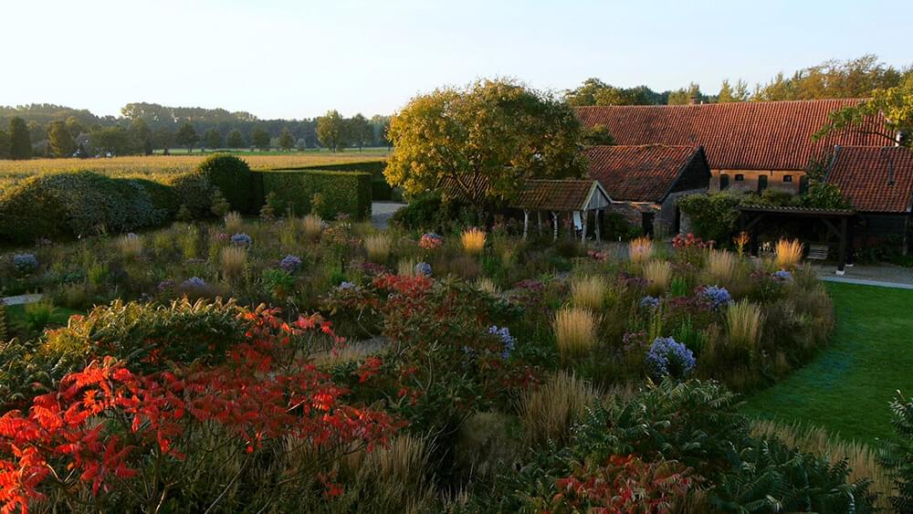

I'm delighted to tell you about two new projects we’re working on this spring: the Great Exhibition Road Festival in South Kensington, London (28-30 June), and the UK cinema release (from 14 June) of Five Seasons: The Gardens of Piet Oudolf, a film about the visionary Dutch landscape designer who has created some of the most famous gardens in the world.
Over one weekend this summer, South Kensington's Exhibition Road will host a free festival of art, science and culture. The Great Exhibition Road Festival will transform the area, with interactive workshops, behind-the-scenes tours, exciting talks and dynamic performances to inspire all ages.
The festival – a collaboration between Imperial College London, the Natural History Museum, the V&A, the Royal Albert Hall, the Science Museum, the Royal Commission for the Exhibition of 1851 and others – marks the bicentenary of the births of Queen Victoria and Prince Albert, taking inspiration from their vision for the Great Exhibition of 1851, which showcased the latest innovations in British industry and culture, and was visited by six million people. The area around Exhibition Road – 'Albertopolis' – was created from the profits of the Great Exhibition and was the first cultural centre of its kind in the world.
The Great Exhibition Road Festival celebrates the crossover between science and the arts and has an amazing line-up of speakers – from the first British astronaut, Helen Sharman, to scientist and broadcaster, Professor Lord Robert Winston. It includes hundreds of events – from an exhibition of the love letters of Queen Victoria and Prince Albert – in German and surprisingly passionate – to playing chess with a robot. To register free for the Great Exhibition Road Festival, sign-up here.
Five Seasons: The Gardens of Piet Oudolf is a documentary about the life and work of the most influential landscape designer of the last 50 years. Oudolf was behind New York's High Line and many other urban spaces. Closer to home, he designed the 7,000 square metre public garden for the art gallery Hauser & Wirth in Somerset. Over the course of the documentary, Oudolf leads filmmaker, Thomas Piper, and his camera on a wandering journey, visiting many of his iconic works.
More than just a film for gardeners, Five Seasons changes the way we think about, and ultimately see, beauty itself. Celebrated by gardeners for his revolutionary designs, by ecologists for his significant contributions to bio-diversity, by horticulturalists and botanists for his unrivalled knowledge of plants, and by the art, design and fashion worlds for his innovative aesthetics, Piet Oudolf has achieved a level of influence and cultural relevance that is rarely, if ever, attained by, in his own words, a modest plantsman. To see Five Seasons: The Gardens of Piet Oudolf check out www.fiveseasonsmovie.com/screenings.
Finally, congratulations to our clients Artem for their part in winning the TV BAFTA for the Virgin Must-See Moment (voted by the public). Artem created the explosion that killed Home Secretary Julia Montague (Keeley Hawes) in Bodyguard, one of most the popular series of 2018. Missed Call won the best short form BAFTA for a poignant and uplifting film about a teenage boy searching for his dad. We were lucky enough to work with Jim and Victoria on this late last year and loved every minute of it. The Ballymurphy Precedent – an outstanding film highlighting a miscarriage of justice in Northern Ireland – also from Dartmouth Films –was nominated in the current affairs’ category.